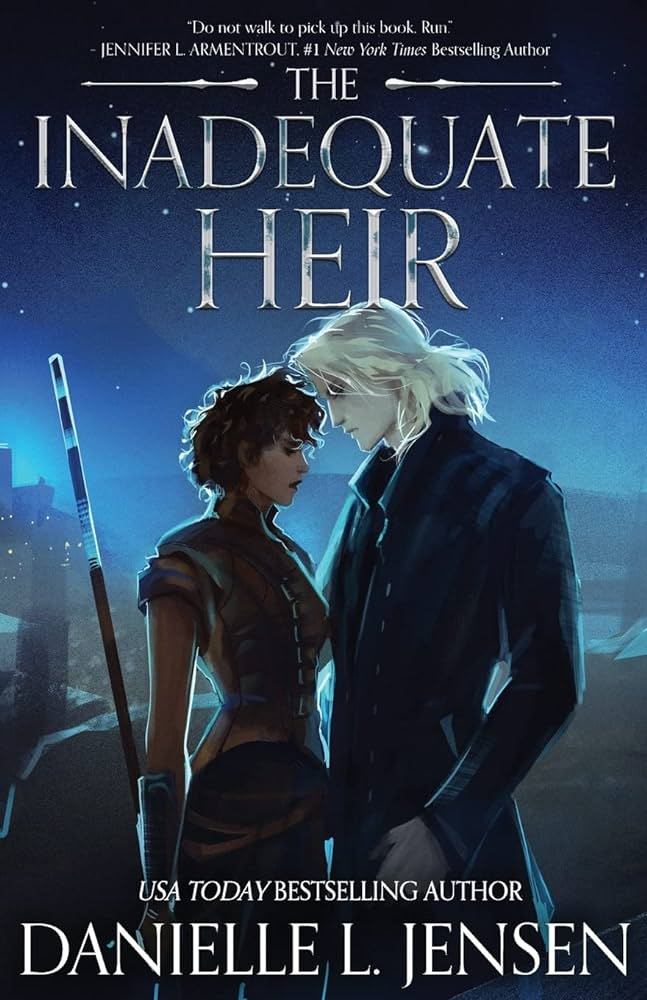
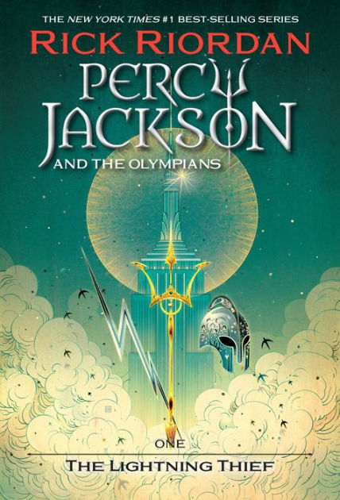
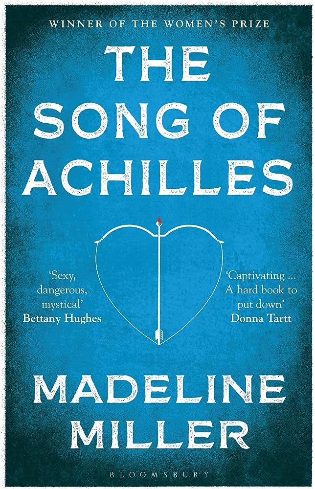
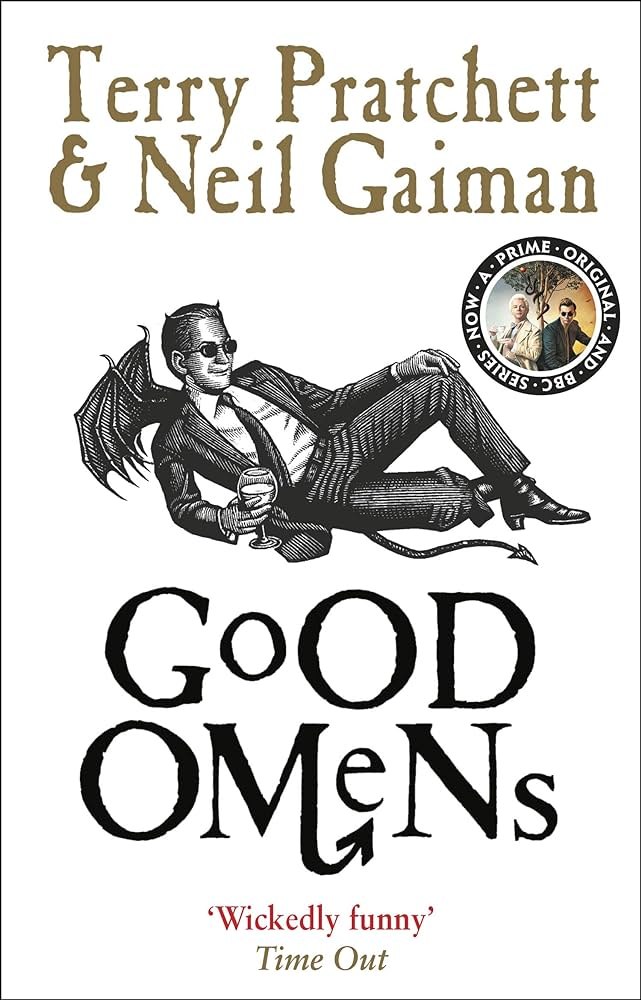
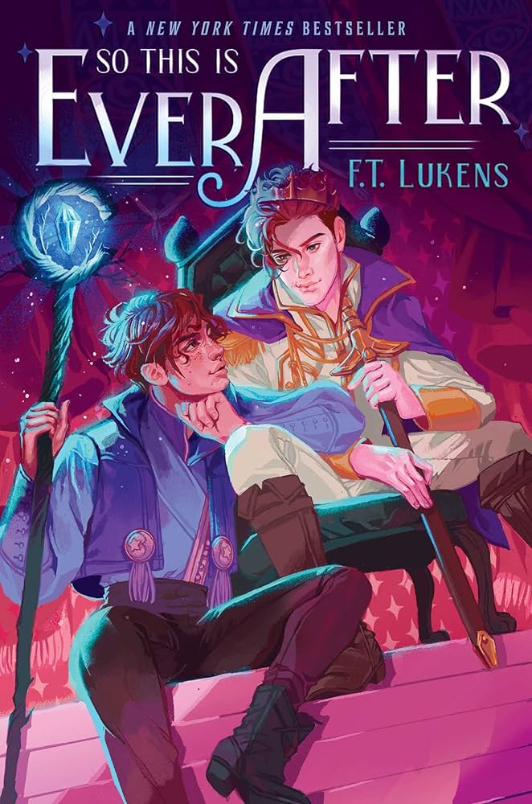

My Recent Reads
This page features all of my recently-read books. Each book has my rating out of 5 stars and a brief, spoiler-free summary. If you would like to get recommendations by genre, be sure to check out the Genre Recommendations page!
Stuff about recommendation page
What Have I Been Reading?
The Inadequate Heir
by Danielle L. Jensen
Rating: 5/5
Tags: Fantasy, Romance, Adventure
Summary: A soldier raised as heir to an empire, Zarrah is motivated by two truths. The first is that the Veliant family murdered her mother. And the second is that her pursuit of vengeance will put every last one of them in their graves. The Endless War between Maridrina and Valcotta has raged for generations, leaving thousands of Zarrah’s people dead and countless more orphaned. So when she’s given command of the contested city of Nerastis, Zarrah is prepared to do whatever it takes to destroy the Maridrinian forces who oppose her. And to kill the Veliant prince who leads them. Yet a chance encounter with an anonymous, and handsome, Maridrinian causes Zarrah to question whether the violence she’s perpetrated is justice or a crime. And as she continues to meet the nameless man each night, she finds common ground - and fiery passion - in his arms. But when identities are revealed, Zarrah must decide whether to embrace a chance at peace…or march to the drums of war.
The Lightning Thief
by Rick Riordan
Rating: 4/5
Tags: Mythology, Urban Fantasy, YA
Summary: Percy Jackson is a good kid, but he can't seem to focus on his schoolwork or control his temper. And lately, being away at boarding school is only getting worse - Percy could have sworn his pre-algebra teacher turned into a monster and tried to kill him. When Percy's mom finds out, she knows it's time that he knew the truth about where he came from, and that he go to the one place he'll be safe. She sends Percy to Camp Half Blood, a summer camp for demigods (on Long Island), where he learns that the father he never knew is Poseidon, God of the Sea. Soon a mystery unfolds and together with his friends—one a satyr and the other the demigod daughter of Athena - Percy sets out on a quest across the United States to reach the gates of the Underworld (located in a recording studio in Hollywood) and prevent a catastrophic war between the gods.
The Hobbit
by J.R.R. Tolkien

Rating: 4/5
Tags: Adventure, Fantasy, Classic
Summary: Bilbo Baggins is a hobbit who enjoys a comfortable, unambitious life, rarely traveling any farther than his pantry or cellar. But his contentment is disturbed when the wizard Gandalf and a company of dwarves arrive on his doorstep one day to whisk him away on an adventure. They have launched a plot to raid the treasure hoard guarded by Smaug the Magnificent, a large and very dangerous dragon. Bilbo reluctantly joins their quest, unaware that on his journey to the Lonely Mountain he will encounter both a magic ring and a frightening creature known as Gollum.
The Song of Achilles
by Madeline Miller
Rating: 5/5
Tags: Mythology, LGBTQ+, Tragedy
Greece in the age of heroes. Patroclus, an awkward young prince, has been exiled to the court of King Peleus and his perfect son Achilles. By all rights their paths should never cross, but Achilles takes the shamed prince as his friend, and as they grow into young men skilled in the arts of war and medicine their bond blossoms into something deeper - despite the displeasure of Achilles' mother Thetis, a cruel sea goddess. But then word comes that Helen of Sparta has been kidnapped. Torn between love and fear for his friend, Patroclus journeys with Achilles to Troy, little knowing that the years that follow will test everything they hold dear. Profoundly moving and breathtakingly original, this rendering of the epic Trojan War is a dazzling feat of the imagination, a devastating love story, and an almighty battle between gods and kings, peace and glory, immortal fame and the human heart.
Good Omens
by Neil Gaiman and Terry Pratchett
Rating: 4/5
Tags: Urban Fantasy, Comedy
Summary: According to The Nice and Accurate Prophecies of Agnes Nutter, Witch (the world's only completely accurate book of prophecies, written in 1655, before she exploded), the world will end on a Saturday. Next Saturday, in fact. Just before dinner. So the armies of Good and Evil are amassing, Atlantis is rising, frogs are falling, tempers are flaring. Everything appears to be going according to Divine Plan. Except a somewhat fussy angel and a fast-living demon—both of whom have lived amongst Earth's mortals since The Beginning and have grown rather fond of the lifestyle—are not actually looking forward to the coming Rapture. And someone seems to have misplaced the Antichrist . . .
So This Is Ever After
by F.T. Lukens
Rating: 3/5
Tags: Romance, LGBTQ+, YA
Summary: Arek hadn’t thought much about what would happen after he completed the prophecy that said he was destined to save the Kingdom of Ere from its evil ruler. So now that he’s finally managed to (somewhat clumsily) behead the evil king (turns out magical swords yanked from bogs don’t come pre-sharpened), he and his rag-tag group of quest companions are at a bit of a loss for what to do next. As a temporary safeguard, Arek’s best friend and mage, Matt, convinces him to assume the throne until the true heir can be rescued from her tower. Except that she’s dead. Now Arek is stuck as king, a role that comes with a magical catch: choose a spouse by your eighteenth birthday, or wither away into nothing. With his eighteenth birthday only three months away, and only Matt in on the secret, Arek embarks on a desperate bid to find a spouse to save his life—starting with his quest companions. But his attempts at wooing his friends go painfully and hilariously wrong…until he discovers that love might have been in front of him all along.